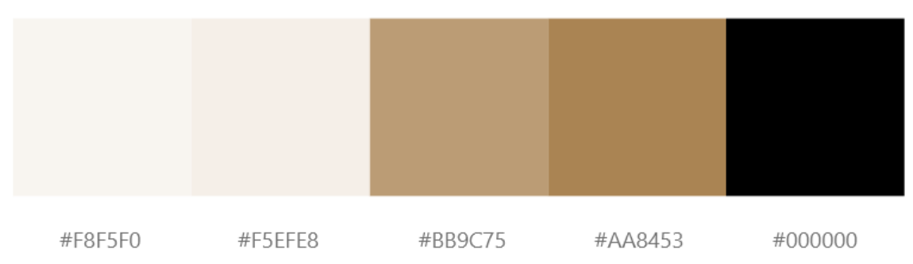

Le Timeless Trésor

Project information
Category: Web design
Client: NYP
Project date: 01 March, 2022
Project URL: https://letimelesstresor.netlify.app
Project Scope: For my UX Design Module, my group and I were tasked to develop an interactive prototype, using HTML, CSS and JavaScript of a website for a hotel.
My Role: As a Member, I created the Events page, Event Reservation page and Online Booking page.
Solution: We conducted user interviews and did competitor analysis to find out what type of webapges we intend to include.
Work Process:
Our team decided on creating a Luxury Vintage Hotel Website, named Le Timeless Trésor, inspired by the rich history and culture of Paris. We conducted a thorough analysis of our competitors, Marina Bay Sands and the Shangri-La Resort, to identify the features that make a good hotel website. Based on their use of sophisticated and consistent color schemes, we decided to create a survey to understand our target audience's preferences for our website's color palette. With their responses, we established a color scheme consisting of black, white, and gold to convey a sense of elegance, luxury, and wealth.
To ensure that our website's branding is consistent with its name and theme, we designed a simple and elegant logo with a serif font and a gold color scheme. The logo's use of white space creates a sense of calm and serenity, matching our website's vintage theme. We aimed to make the logo and color scheme timeless, just like the hotel's name, to create a lasting impression on our visitors.
The images below show the initial mockup of the 6 pages I have created using Adobe XD. We aim to create a website with a timeless and sophisticated vibe that exudes vintage charm, cleanliness, and elegance.


Development & Integration:
The website was developed using a combination of HTML, CSS, and JavaScript. We utilized CSS Grid and Flexbox to create a responsive design that is compatible with all devices. To enhance user experience, CSS animations and transitions were incorporated, while JavaScript was utilized to create interactive elements like the navigation menu, booking form, and sign-up form.
To manage the project's version control, we utilized Github. Each team member created their own branch for their work, and we merged it into the master branch upon completion. This allowed us to keep the master branch up to date and avoid conflicts between team members' code.
Outcome & Results:
Within a span of four months, we developed a fully responsive, functional, and interactive website that caters to all devices. We received excellent feedback from our lecturers, which further validates our efforts and commitment to the project.